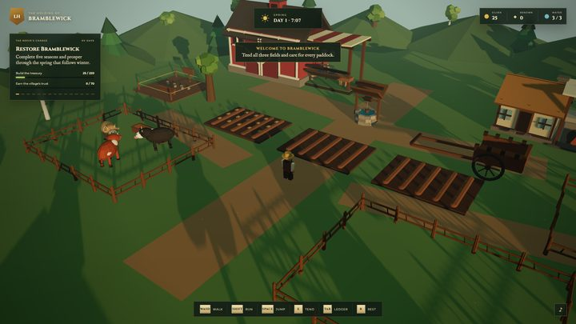
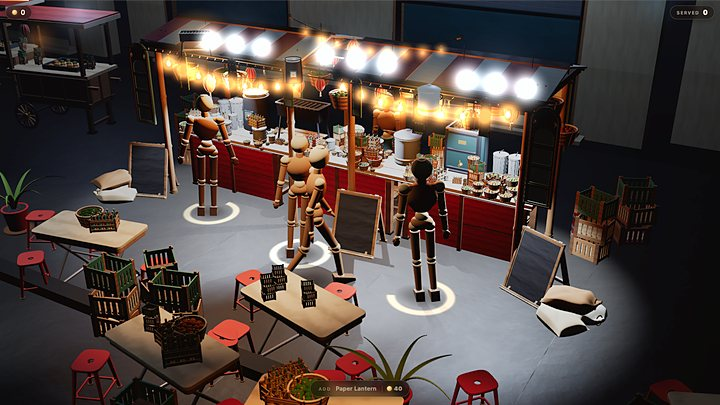
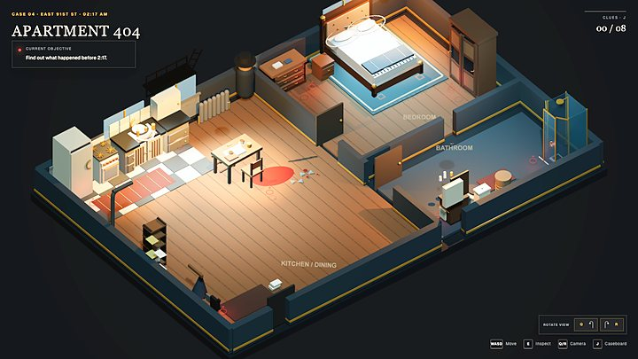
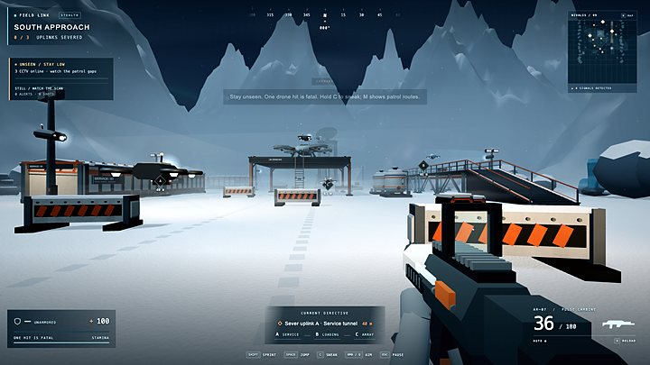

One line.
Two weeks.
Ten TAO.
A two week game jam. Give an AI coding agent one line and it builds a playable Three.js game, every 3D object written as code from the open 404 recipe. The best one wins 5 TAO, about 1,300 dollars.
paste this into your agent
Read GAME.md in github.com/404-Repo/404-game-recipe and build me a game about
a coastal kart racer
what
Same recipe.
Same models.
Different heads.
Everyone gets the same open recipe, the same test harness and free image and sound credits. Your agent and its models are your own. What separates the winners is what you think to build.
Built this way already, all six in the strip below: a kart racer, a desert shooter, a farm, a night market stall, a locked room mystery and an arctic stealth mission. Every 3D object in every frame is generated code. No meshes, no asset store, no hand modelling. Textures, skies and sound are ordinary files, generated on Atlas or your own.
 Drive / kart racer
Drive / kart racer Rust 17 / shooter
Rust 17 / shooter
The Little Harvest / farm
Night Market / stall
Apartment 404 / mystery
Nivalis 9 / stealthhow
Five steps
Clone the recipe
404-game-recipe is the method and the test harness, the scripts that check assets and drive your game. npm install then npm run selftest.
Sign up for Atlas, optional
Atlas is the AI production platform run by the team behind 404. Sign up through the jam page and a fixed credit grant lands for reference images, textures, skies, sound and music, so nobody pays for art. Your own art is allowed instead.
Give your agent the line
The line above, with your idea in it. How you split the work is yours. Your agent's tokens are your cost: the reference racer took about 10 million tokens and ten hours for the full method, and a half day version is described in the recipe.
Pass the gate
node harness/jam.mjs <your live url> loads your game on a phone viewport over 4G, taps start with a real touch, and prints a verdict block. That block is your entry ticket.
Submit
A pull request to 404-game-jam with the link, the verdict and what you found. Closes 25 Sep, 23:59 UTC.
gate
Machine checked
before a human looks
A judge only ever compares games that actually run, on a phone, with the player moving. The jam gate is one script in the recipe. Run it against your live link as often as you like; it writes screenshots and a verdict, and we rerun it before your entry is merged.
window.__READY__ within 20 s on a 4G profile, 4 Mbps down
From a real click and a real touch tap, never a debug hook
window.__GAME__ every frame: position, frame rate, draws, triangles, game over
At least a metre under a real finger on a 390 by 844 phone viewport
One folder at a public URL, relative paths only, under 10 MB transferred
900 draw calls and 1.5M triangles at peak. Frame rate is reported, not judged: headless numbers are software rendering.
rules
One hard rule
Everything else is open: any agent, any models, any generator for images and sound, named in your entry. The full rules live in the jam repo and where the two differ, the repo wins.
Every 3D object is Three.js code written through the recipe. No downloaded meshes, no asset store, no hand modelling, and no mesh smuggled in as a vertex array: geometry is built from constructors, and the shipping check flags anything else.
Textures, skies, sprites and sound may be files: Atlas on your jam credits, or your own, declared in your entry.
One to four people, one entry each. Public source repo, first commit on or after 11 Sep.
No trademarked characters, names or logos. Read the 404 reference games all you like; copying their assets or code disqualifies.
You keep your game. Entering grants 404 a non-exclusive licence to show, stream and write about it. Nothing from your repo is published without asking. Atlas outputs on jam credits are yours.
judging
Blind, in pairs,
in motion
Stage one: frames from every entry in motion, shown two at a time against other entries, names off, order shuffled, three judges, one question: does it look like a made thing. The top twelve are the shortlist. Stage two: every judge plays each shortlisted game for thirty minutes on a phone and a laptop and scores the four questions on the right. No scores out of ten before then: a number invites a build to optimise the number.
Judges announced before entries close. Conflicts declared, and a conflicted judge does not score that entry.
Is it good to play
Does it look like a made thing
What did you find that nobody else tried
How it was made, with the receipts: your repo, your gate runs, what you threw away
prizes
Ten TAO and a stage
Paid in TAO, one wallet per team, within 30 days. Dollar figures are for orientation, at about 260 dollars per TAO on 7 Sep 2026.
About 1,300 dollars. Announced on stage at Exploit Summit, Montreal, plus a build breakdown written with you and published by 404.
About 780 dollars. Showcase slot and a post on the 404 channel.
About 390 dollars. Showcase slot and a post on the 404 channel.
About 130 dollars. Voted by entrants, on the shortlist, one GitHub account one vote, 27 to 28 Sep.
Keeps their game, outright.
A free Atlas licence, chosen by the judges from the shortlist and the honourable mentions.
Showcased by 404 on X with the play link and, with your say so, the build behind it.
Anyone 18 or over where the law allows. People who work on 404, its subnet or Atlas can enter and cannot win. Taxes are yours.
dates
Two weeks
12:00 UTC. Recipe, harness and credits available. Build earlier if you like; your repo's first commit must be on or after 11 Sep.
Questions answered, one entry taken apart live.
23:59 UTC. Pull request open, gate passed, link working. Late is late.
Twelve games published here and on X. Community vote opens.
Announced on stage at Exploit Summit, Montreal, a Bittensor conference. Nobody has to be there.
questions
Do I need a GPU?
No. Your agent writes the geometry as code. Running the 404 model yourself on a rented GPU is an option the recipe describes, not a requirement.
Do I have to use Claude?
No. Any agent that reads files, runs a shell and looks at images. Name what you used.
Can I use my own art?
Yes, for images and sound. The 3D is the one thing that must come through the recipe as code.
How do I get paid?
In TAO, to one Bittensor wallet per team, within 30 days of the announcement. You can give the wallet at submission or when you win. We may ask a winner to confirm who they are first.
Can I enter the same game somewhere else?
Yes. Your game is yours. Tripo's Tripothon takes submissions from 15 September to 5 October, and it takes the same world-building game we do: finish it here by the 25th, polish it, then enter it there.
Can I start before the 11th?
Yes. The recipe is public now. Your entry repo's first commit must be on or after 11 Sep 00:00 UTC, and the work has to be in the commits.
What if my link is broken at close?
One 24 hour window to fix the deploy without changing the game. Once. Details, ties and disqualification are in the jam repo.
Where do I ask for help?
The 404 Discord is the fastest. Otherwise open an issue on the jam repo, ask on X at @404gen_, or come to office hours on 18 Sep.